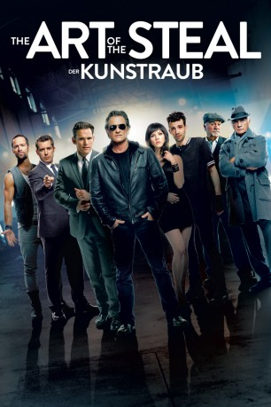

#2524 The Art of the Steal - Der Kunstraub
 gesehen am 17.12.2016
gesehen am 17.12.2016
 
 IMDB-Wertung: 6.3 / 10
IMDB-Wertung: 6.3 / 10  Metascore: 53
Metascore: 53 
Crunch Calhoun ist ein in die Jahre gekommener Motorad-Profi, der nicht nur mit lebensmüden Stunteinlagen vor besoffenen Jahrmarktsbesuchern Tag ein Tag aus seinen Hals riskiert, sondern diesen eines Nachts auch bricht. Einbandagiert und frustriert über die Erfolg- und Sinnlosigkeit seines Lebens, beschließt Crunch zusammen mit seinem verlotterten Protegé Francie und seiner ehemaligen Stuntassistentin - der schwarzhaarigen Provinzschönheit Lola - zu seinem alten Handwerk zurückzukehren: dem professionellen Klauen. Mit der Unterstützung seines ideenreichen Halbbruders Nicky, des Fälschers Guy und anderen anrüchigen Leuten macht er sich an einen der hoffentlich größten Kunstraube der Geschichte. Alles, was ihm und seinem Team den Diebstahl der berühmten Gutenbergbibel jetzt noch verhageln mag, ist Agent Bick sowie dessen komplette Behörde ...
Jahr: 2013
Dauer: 90 Minuten
FSK: 12
Land: Kanada Studio: Sony Pictures Home EntertainmentTonspuren: DTS - ,
Untertitel: Deutsch, Englisch,
Auflösung: 1080p (1920x800) Größe: 4188 MB
Genre: Komödie, Krimi
Regisseur: Jonathan Sobol
Drehbuch: Jonathan Sobol
Soundtrack:
Darsteller:
 Kurt Russell als Crunch Calhoun
Kurt Russell als Crunch Calhoun Matt Dillon als Nicky Calhoun
Matt Dillon als Nicky Calhoun Jay Baruchel als Francie Tobin
Jay Baruchel als Francie Tobin Kenneth Welsh als 'Uncle' Paddy MacCarthy
Kenneth Welsh als 'Uncle' Paddy MacCarthy Chris Diamantopoulos als Guy de Cornet
Chris Diamantopoulos als Guy de Cornet Katheryn Winnick als Lola
Katheryn Winnick als Lola Jason Jones als Interpol Agent Bick
Jason Jones als Interpol Agent Bick Terence Stamp als Samuel Winter
Terence Stamp als Samuel Winter Devon Bostick als Ponch
Devon Bostick als Ponch- Elle Downs als Female Border Guard
- Dax Ravina als Sunny
- Rob deLeeuw als Van Der Beer
- Karyn Dwyer als Ginger
- Christopher Dyson als Ranking Officer
- Jasmin Geljo als Detective Brodowski
- Vieslav Krystyan als Detective Kumik
- Maria Lerinman als Belly dancer
 Eugene Lipinski als Bartkowiak
Eugene Lipinski als Bartkowiak Stephen McHattie als Dirty Ernie
Stephen McHattie als Dirty Ernie- Alan C. Peterson als Reverend Herman Headly
 Joe Pingue als Carmen
Joe Pingue als Carmen Juan Carlos Velis als The Construction Worker
Juan Carlos Velis als The Construction Worker- K. Trevor Wilson als Beefy Guy #2
- Sandy Kellerman als , uncredited
- Ron Laugher als Passerby , uncredited
- Scott McCrickard als Beefy Man #1
- Camilla Scott als Olga Something-Long
- Jon Steinberg als Stoned Ice cream truck driver
- Mike Wilmot als Detroit Border Guard
- Steven Lee Wright als George
- Kyle Hytonen als Carnie , uncredited
- Michael McNaughton als Carnie , uncredited
Datei: X:\2013(A-F)\Art of the Steal - Der Kunstraub, The (2013, FSK12, 1920x800).mkv seit 18.11.2015
Festplatte: HD 2012(N-Z)-2013(A-H)
 Es gibt insgesamt 127 Filme in der Gruppe '2013(A-F)'
Es gibt insgesamt 127 Filme in der Gruppe '2013(A-F)'